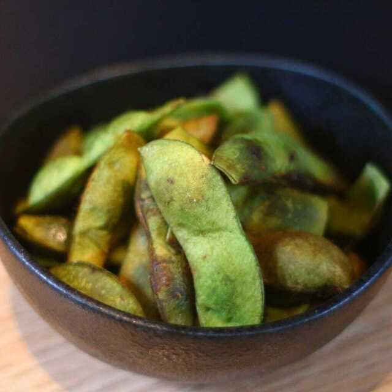
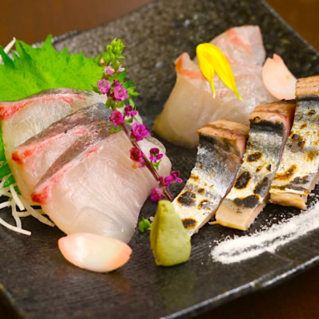
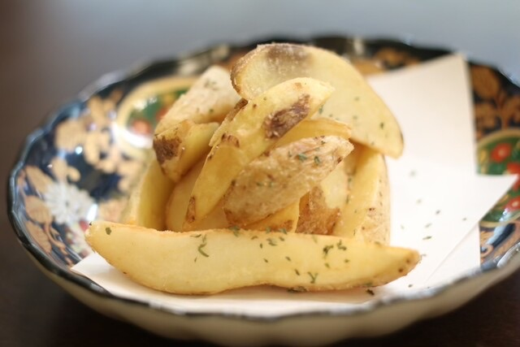
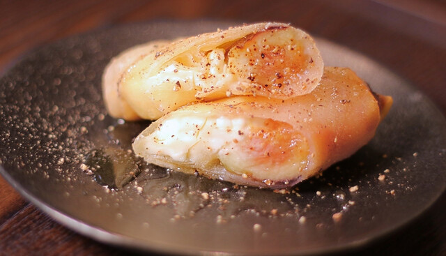
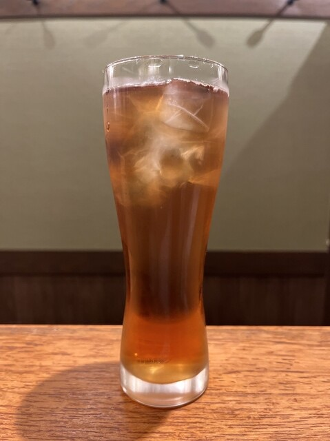
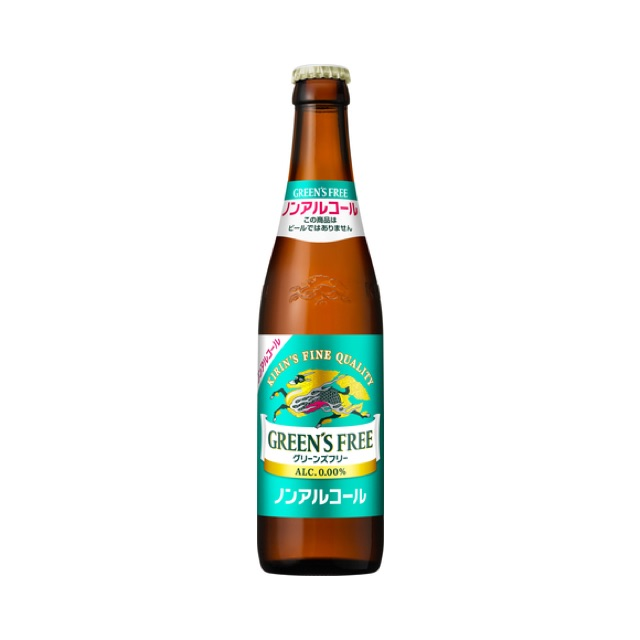
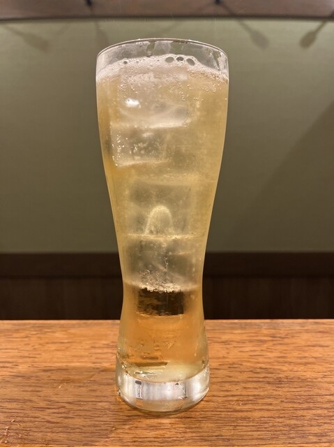
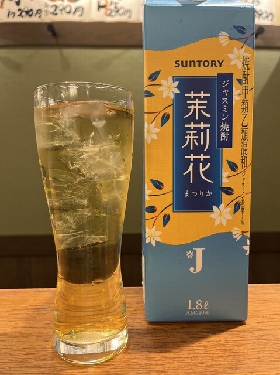
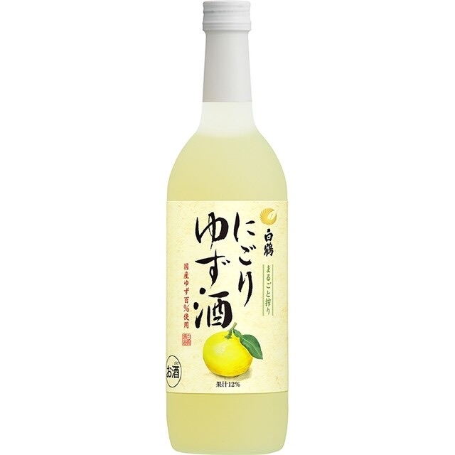

Menu
Prices include tax / as of 2026/11/16
Prices include tax / as of 2026/11/16

Enjoy our rich and creamy cod milt, served refreshingly with ponzu sauce. Try it together with grated daikon and chili, and pair it with your favorite drink.

We grill cod milt on a bed of kombu seaweed for a savory aroma. Savor the milt infused with kombu flavor, finished with dashi soy sauce.


We sear the fatty skin of yellowtail for a fragrant finish. Enjoy it with a touch of wasabi!

We slowly simmer yellowtail and daikon until the flavors are fully absorbed. A comforting, heartwarming dish!
Enjoy the unique texture and refined flavor of fugu, served as sashimi.


Crispy fried tofu topped generously with yuba and mushroom sauce. Please enjoy while it's hot!


Our homemade potato salad features fresh seasonal vegetables! Instead of mayonnaise, we blend it with creamy cream cheese for a rich flavor!

A colorful assortment of five recommended seafoods of the day, served as sashimi.

A selection of three recommended seafoods of the day, served as sashimi.

Plump raw shrimp and avocado prepared yukhoe-style. Break the egg yolk and mix well before enjoying!

We sear only the skin of fresh, fatty seasonal Pacific saury for this sashimi. Enjoy with condiments for a refreshing taste!

Our autumn bonito, caught as it migrates south, is especially rich and flavorful. Enjoy it lightly seared with condiments for a refreshing finish!

Fresh horse mackerel combined with tomato and onion, served as carpaccio. Perfect as a palate cleanser or a light snack!

A tasting plate of three recommended appetizers. A perfect way to start your meal!

Our rolled omelet is fluffy and soaked with savory dashi. Enjoy it with grated daikon on the side!

Beef tendon simmered until meltingly tender. A perfect match for your drink!

Eggplant topped generously with whitebait and fresh condiments. A refreshing and appetizing dish!

The rich umami of shutou is mellowed by creamy cheese. Enjoy with your favorite drink!

Chicken skin finished with ponzu for a light, refreshing taste. A great companion for drinks!

Crispy fried small horse mackerel marinated in a sweet vinegar sauce for a refreshing taste.

Crunchy shark cartilage dressed with plum paste—a unique delicacy. Enjoy it with your drink!

Silky yuba served sashimi-style. Savor the gentle sweetness of soybeans!
Grilled figs bring out their natural sweetness, served dengaku-style with miso.

Three kinds of autumn mushrooms, sautéed in fragrant butter.
A dish where the rich butter and aroma of seasonal mushrooms come together.

Grilled ray fin with a savory aroma. The more you chew, the more umami unfolds. Enjoy with mayonnaise!

Grilled turban shell served in its shell. Enjoy the aroma of the sea!

Whole prawns grilled with their shells for a savory finish. Enjoy every bite, including the flavorful head! *Photo shows two pieces.

We steam autumn salmon and seasonal mushrooms wrapped in foil to lock in their flavors.
Finished with a refreshing ponzu sauce!

Duck breast seared for a fragrant surface and tender finish. Enjoy with fresh condiments!

Tender grilled chicken breast paired with plum paste and shiso. Refreshing and delicious! Photo shows two servings.

Classic yakitori with alternating chicken and green onion, grilled with a sweet-savory sauce. Photo shows two servings.

Potato wedges fried with the skin on—fluffy inside and perfect for sharing!

Mentaiko, shiso, and cream cheese wrapped and fried until crispy. Enjoy the melting cheese and rich mentaiko flavor!

We wrap whole ripe seasonal figs and cream cheese in a crispy spring roll!
The perfect harmony of melting fig and cheese inside a crunchy shell.

Grilled rice balls with a savory, crispy finish. Perfect for the end of your meal!

Sparkling water

Oolong tea


Draft beer



Whisky and Soda


Lemon sour


Shochu Barley on the rock

Shochu Barley and water

Shochu Barley and hot water

Shochu Barley and soda
Shochu with Oolong Tea



Shochu Sweet potato on the rock

Shochu Sweet potato and water

Shochu Sweet potato and hot water

Shochu Sweet potato and soda


We can also serve it with water or soda, though it will be a bit lighter. Please ask our staff.

We can also serve it with water or soda, though it will be a bit lighter. Please ask our staff.